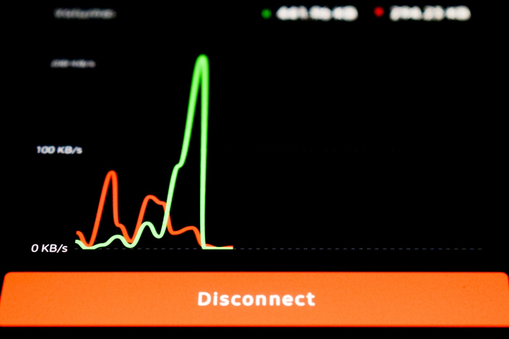

一、时间线
美东时间 6 月 12 日下午 5 点 21 分，Anthropic 向全球用户发出通知：Fable 5 因美国出口管制法规，即刻在全球范围停止服务。
距 Fable 5 正式发布，不足 72 小时。
发布时它是当时全球最强的可用模型，SWE-bench Pro 80.3%。三天前 Dario Amodei 还在发布会上说这是"AI 历史上的里程碑时刻"。三天后，订阅用户打开 Claude，看到的是 404。
北京时间 6 月 13 日上午 10 点，智谱发布公告：GLM-5.2，MIT 协议，完全开源，全量用户即刻可用。
时间差：不到 17 小时。
智谱 CEO 张鹏在发布会上说了一句话："前沿智能属于每一个人。"在那个具体的时间节点，这句话有了一个不需要解释的对照组。智谱股价当日一度涨 47%。

二、那本没被算完的账
GLM-5.2 确实很强。SWE-bench Pro 62.1，GPT-5.5 是 58.6，差距超过 3 个百分点。API 定价每百万输入 token 1.4 美元，GPT-5.5 是 5 美元——同等任务，成本差 6 倍。
这本账算起来很容易。
还有另一本账没算完。
智谱（Z.ai）于 2025 年 1 月被美国商务部工业安全局列入出口管制实体名单，理由是"推进中国军事现代化"。你通过 API 发给它的代码，依据中国《国家情报法》（2017），理论上可以被中国政府合法调取。这不是阴谋论，是写在法条里的文字。
此刻你可能在想：但它开源了，我可以自托管。
这是正确的思路。MIT 协议下的开源权重，本地部署不经过 Z.ai 服务器，物理上切断了数据传输路径。但 GLM-5.2 总参数 753B，FP8 量化后仍需数十张 H100 才能跑满精度。这不是一个工程团队在下午就能解决的事。
三、MIT 开源，不等于数据主权
大多数关于 GLM-5.2 的报道，在这两个概念之间打了一个等号，然后就过去了：开源 = 安全。
这个等号不成立。
MIT 协议是软件著作权许可，规定了权重的使用、修改和再发布条款。国家情报法是主权国家的安全法律，规定了国境内组织对境外客户数据的配合义务。两件事在不同的法律体系里运作，一个不能覆盖另一个。
准确的表述是：MIT 开源解决了"能不能用这个权重"，没有解决"API 调用数据去哪里"。
对于真的在意数据安全的企业，选项只有一个——自托管开源权重，不走 Z.ai 的任何服务器。技术上可行，成本上对大多数团队仍是挑战。
对于其他人，这道题还没有简单答案。
四、同一周，AI 多了一条选轴
Fable 5 被美国政府用一纸行政令关掉。GLM-5.2 被中国政府背书的公司在精确计算的时机点放出来。
这不是关于谁对谁错的叙事。这是一个关于 AI 工具选择依据的结构变化。
在这之前，选 AI 工具的轴是：性能、价格、生态。在这之后，多了一条：你的工作负载在哪个法律体系里运行，那个体系里的政府对这个模型有没有主张。
这条轴以前不是没有，只是从来没有用同一周两件事这么直白地展示过。
你现在也可以用 GLM-5.2 了。先想好，你在用哪个模型——还是在选择把代码放在哪个主权体系里。